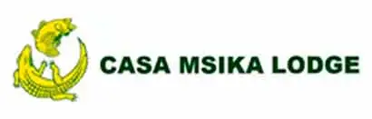

Programas mais procurados
Transeptos, bases de dados e ética de campo.
Patrulha, evidências e segurança no terreno.
Identificação e registo no Jardim Botânico e Mini-Museu.
Répteis e anfíbios — métodos e biossegurança.
Guias, visitantes e conservação como produto.
GPS, mapas e dados espaciais no terreno.
Acções de campo · certificado de participação em vários programas
Transeptos, bases de dados e ética de campo.
Patrulha, evidências e segurança no terreno.
Pontos de contagem e identificação.
GIS · fiscalização · turismo · gestão · detecção remota · certificação qualificada
GPS, mapas e dados espaciais no terreno.
Imagens, índices e leitura de paisagem.
Custos, receitas e sustentabilidade de produtos de natureza.
Explorar
Sensibilização junto a comunidades limítrofes.
Crânios, formalina e documentação de espécimes.
Serviço, interpretação e impacto reduzido.
Pontos de contagem e identificação.
Custos, receitas e sustentabilidade de produtos de natureza.
Imagens, índices e leitura de paisagem.
Intercâmbio com UP, UniZambeze e outras IES.
Clique para ver o perfil completo
Certificação e apoio à capacitação

Casa Msika LodgeQuem já participou
Sara N.Estudante EGFB“O workshop de inventário no Jardim Botânico deu-me confiança para o estágio em área de conservação.”
Miguel L.Guia de campo“A formação em fiscalização foi prática e alinhada com o que fazemos no terreno todos os dias.”
Cláudia M.Docente“Levei métodos de educação ambiental directos para as minhas turmas no instituto médio.”
Rui C.Alumni Synapse“Os mini cursos de GIS abriram portas no meu trabalho com dados de fauna.”